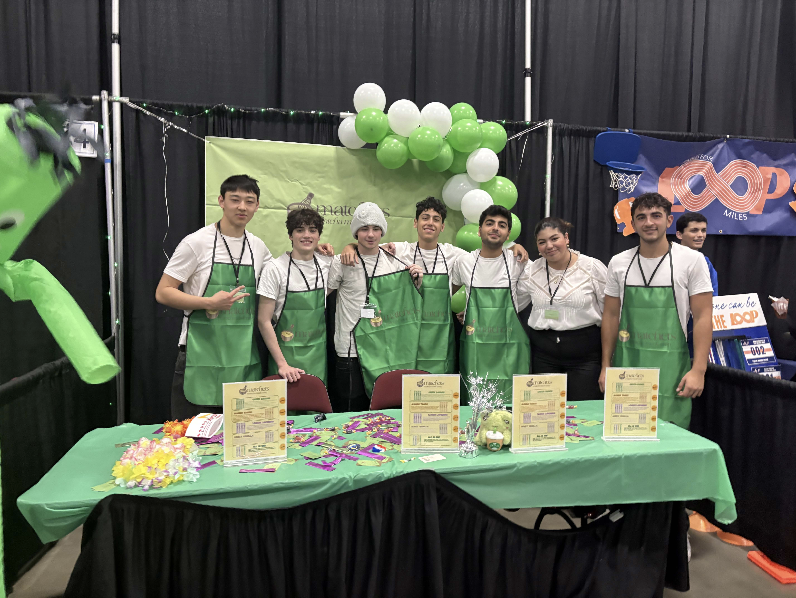

Event Presence
Booth Presentation
The booth photo is featured in the hero for atmosphere and shown again here in full so the complete presentation remains visible.

About Me
Building strategy, storytelling, and leadership through VEI.
I am a high school senior in the Virtual Enterprise International program with hands-on experience in a competitive business environment. As Vice President of Marketing at Matchets, I directed a team of five associates and led the development of marketing strategies, sales materials, and brand positioning.
My work focused on branding, designing sales materials, and presenting strategic plans. Through competitions and collaborative projects, I developed strong leadership, communication, and problem-solving skills. I am especially interested in how businesses compete and connect with customers in real markets.
Portfolio
Seven artifacts that show strategy, design, and execution.
Each piece reflects how I contributed to Matchets through business planning, visual communication, and competition-ready marketing materials.
Artifact 01
Written Marketing Plan
Strategy, audience, pricing, promotion, and brand direction.
Written Marketing Plan
Full marketing strategy covering target audience, branding, pricing, and promotion.
This artifact represents the most important work I completed in my VEI class because it shows my ability to think strategically about a business. I helped develop a full marketing plan that included target audience, branding, pricing, and promotion strategies. This project required strong research and decision-making skills because every choice had to be supported with reasoning. I learned how to connect customer needs with business goals in a realistic way. It also helped me understand how businesses compete in real markets. This artifact shows my ability to think beyond simple ideas and build a complete plan. It reflects both my effort and my understanding of marketing concepts. Overall, it demonstrates my growth in business strategy.
View Artifact
Artifact 02
Marketing Plan Presentation
Clear communication of strategy, decisions, and business logic.
Marketing Plan Presentation
Presentation explaining marketing strategy and decisions.
This artifact highlights my ability to communicate ideas clearly and confidently. I presented our marketing plan to an audience and explained our strategy. I learned to simplify complex ideas and speak under pressure. It also strengthened my teamwork during presentations. This shows I can both create and communicate ideas. This experience prepared me for real business situations.
View Artifact
Artifact 03
Product Catalog
Customer-facing product organization with consistent brand presentation.
Product Catalog
Product catalog presenting Matchets offerings with organized visuals and customer-facing details.
This artifact shows how I helped turn product information into a polished customer experience. A catalog has to do more than look appealing. It also needs to guide customers, support the brand, and make the products easy to understand. Working on this piece strengthened my attention to layout, consistency, and message clarity. It reflects my ability to design materials that support both sales and brand identity. It also demonstrates how marketing design can directly influence customer interest.
View Artifact
Artifact 04
Company Brochure
Brand storytelling and company positioning in a concise format.
Company Brochure
Brochure introducing the company, its identity, and its value to customers.
This brochure reflects my understanding of how first impressions shape a brand. It required balancing visuals, concise writing, and business information in a format that could be used in presentations and outreach. Through this work, I practiced communicating Matchets in a way that felt professional, memorable, and easy to understand. It shows that I can create materials that represent a company clearly while keeping the audience engaged. This artifact also highlights my ability to connect design decisions with brand strategy.
View Artifact
Artifact 05
Assorted Pack Flyer
Focused promotion designed to capture interest quickly and clearly.
Assorted Pack Flyer
Promotional flyer designed to spotlight a featured product offering and encourage interest.
This artifact demonstrates my ability to market a specific product with focused and persuasive design. A flyer has to quickly attract attention, communicate value, and stay visually aligned with the brand. By creating a piece like this, I learned how to prioritize the most important information and present it in a format that is easy for customers to absorb. It reflects my skill in combining promotion, design, and audience awareness. This kind of work helped me understand how smaller sales materials contribute to larger campaign goals.
View Artifact
Artifact 06
Winter Banner Ad
Seasonal campaign design adapted for relevance and brand consistency.
Winter Banner Ad
Seasonal banner advertisement tailored to promote the brand through timely campaign design.
This banner ad shows how I adapted marketing materials for seasonal relevance while keeping the Matchets brand consistent. It required me to think about timing, audience attention, and how to create a design that feels current without losing professionalism. I learned how campaigns can be shaped around moments and themes to make products feel more engaging. This artifact highlights my creativity, flexibility, and attention to branding details. It also demonstrates how I can support a broader marketing strategy through targeted visual content.
View Artifact
3rd Place - San Diego Regional Conference 2025
Artifact 07
Sales Materials Collection
Competition-ready materials recognized for polished execution.
Sales Materials Collection
Collection of competition-ready sales materials showcasing brand consistency and persuasive communication.
This artifact reflects the range and quality of the sales materials I helped develop for Matchets. It brings together design, messaging, and practical business communication in a way that supported our competitive performance. Earning recognition at the San Diego Regional Conference made this work especially meaningful because it showed that our materials stood out in a real judged setting. This collection demonstrates my ability to contribute to polished, professional deliverables under competitive expectations. It captures both my creativity and my commitment to high standards.
View ArtifactContact
Open to opportunities, conversations, and future business experiences.
I’m interested in continuing to grow through marketing, business strategy, and leadership opportunities.